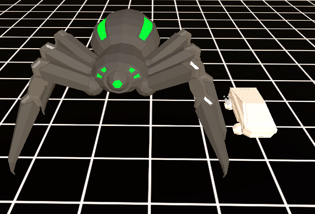
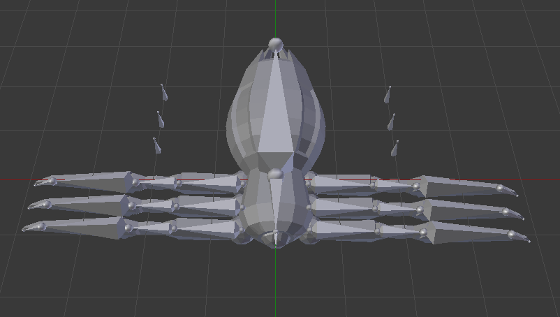

Large spider-like robots that will attack the player in project Frone.
Project Frone is a fast-paced endless runner, the player will encounter these enemies in certain areas in the game. These enemies will set up ambushes from structures above the road.
If the player does not avoid an Airach's scanners, the Airrach will shoot its energy web at the player, players who get hit by an Airach's energy web need to act quickly to avoid being pulled in.

In project Frone, the enemies are part of a robotic army, send by an alien race to conquer Earth. I wanted to make the enemies in the game look alien but still familiar and unnerving for players, which is why I chose to use insectoid animals as inspiration.

After experimenting with rigs in Blender, this is the first proper rig I made, the Airrach is currently still in development, I am planning to use this model and its rig to experiment with procedural animation.